首页 > 编程笔记
PyCharm使用教程（非常详细）
工欲善其事，必先利其器，使用好的工具能让学习更高效。
市面上流行的 Python 代码编辑器众多，我们可以根据自己的需求选择适合自己的。这里建议选择 PyCharm，使用起来方便简单，本教程将讲解 PyCharm 在日常开发中常用的功能。
PyCharm 作为一款针对 Python 的代码编辑器，配置简单、功能强大，使用起来省时省心，对初学者友好。
PyCharm 是主流 Python IDE 之一，由 JetBrains 公司开发，它带有一整套可以提高用户使用 Python 语言开发时的效率的工具，如调试、语法高亮、项目管理、代码跳转、智能提示、自动完成、单元测试、版本控制等。
PyCharm 支持跨平台，在 macOS 和 Windows下都可以使用。
目前 PyCharm 共有3个版本：Professional、Community 和 Edu，其中：
对于开发人员，强烈建议选择 Professional 版，本教程也将以 Professional 版为例进行讲解，如图1所示。
在该窗口中，我们先指定项目位置和项目名称，再打开 Project Interpreter 列表，选择创建新的项目对应的解释器或者使用已有的解释器。
我们选择 New environment using，打开其右方的下拉列表，选择 Virtualenv、Pipenv 或 Conda。这些工具可以为不同项目单独创建 Python 虚拟环境，从而分别保存不同项目所需的依赖项。
本教程中选择的是 Pipenv，选择 Pipenv 后，指定环境位置，从 Python 解释器列表中选择已安装在系统中的 Base interpreter。
我们点击 Create 按钮，即在 PycharmProjects 目录下新建了一个名为 localDemo 的示例。从图3中可以看到 Python 的解释器为 /.local/share/virtualenvs/localDemo-ozjleAxM/bin/python，这是一个虚拟环境下的解释器。
通过点击
最后，简单写一个 helloWorld 示例，如图6所示，运行后验证了已采用本地刚构建的虚拟 Python 环境，对后续安装的包都能很方便地进行管理，做到不同项目之间的有效隔离。
在 Existing interpreter 中添加 Interpreter。如图8所示，我们选择 SSH Interpreter 进行远程服务器的 SSH 配置，并在 SSH Configurations 中配置 SSH 的信息。
点击图8的箭头，会弹出配置界面。填好信息，点击 Test Connection 进行测试，显示配置成功，如图9所示。
最后，我们在 Add Python Interpreter 窗口选择刚刚添加成功的远程服务器，如图 10 所示。
点击 Next，进入图 11 所示的窗口，选择远程虚拟的 Python 解释器。
在选择 Python 解释器之前，我们需要在远程服务器上创建虚拟环境。
首先，在远程服务器上，安装好对应的 pipenv 工具，新建 remoteDemo 目录。然后，进入该目录，执行以下命令：
所以在图11中，选择 /root/.local/share/virtualenvs/remoteDemo-ZJXK45vL/bin/python 为远程虚拟环境的 Python 解释器，设置成功后的界面如图 13 所示。
在 Remote project location 中设置远程项目目录，我们选择之前在远程服务器上创建的 remoteDemo，如图 14 所示。
另外，我们需要在 Deployment 界面配置 SFTP 的信息，如图 15 所示。
除了配置 SSH 连接信息，我们还要添加本地项目代码的地址和远程部署的地址，方便后续的代码上传和下载，如图 16 所示。
配置成功后，用鼠标右键点击项目名 remoteDemo，在弹出的菜单中选择 Deployment，可以看到 Upload to… 和 Download from… 两个选项，它们分别用于代码的上传和下载，如图 17 所示。
最后，我们写一个简单的 helloWorld 示例，上传到远程服务器，并在 PyCharm 中点击运行。我们可以发现解释器是远程虚拟 Python 环境，运行的 helloWorld 示例是远程目录下的脚本，如图 18 所示。
PyCharm 具有远程编程调试功能，下面我们讲解在本地上配置、使用远程开发和调试的步骤。
在图 20 中，我们将 Local path 配置为本地的代码路径就可以，这是将本地这个目录同步到服务器上。
Deployment path on server 用于配置 Linux 上项目的路径，此处默认为根目录我们填写相对于 root path 的目录即可。
如果我们有一些文件或文件夹不想同步，那么在 Excluded Paths 选项卡里面添加即可，并且可同时指定本地和远程。
另外，在 Deployment 下的 Options 可以设置自动同步更新上传到服务器，只要在 Upload changed files automatically to the default server 右侧选择 Always 即可，这样我们就不用每次手动更新到服务器，如图 21 所示。
这个功能开启之后，我们在本地新建的文件都会自动同步到远程 Linux 服务器上。
这样就配置完成了，我们在本地 PyCharm 就可以使用远程的 Python 编译器，如图 24 所示，运行远程服务器上的代码可以像运行本地代码一样方便，图 24 中线条标注的是远程 Python 解释器，说明远程开发环境配置成功了。
另外，在新建任何 .py 文件的时候，建议在文件头添加图 26 所示的语句，显式地声明编码方式。
分屏模式开启方式为在代码文件上用鼠标右键点击，在弹出的菜单中，选择图 27 所示的两个选项。
另外，在这个界面，我们可以方便地进行切换 Python 版本、添加和卸载工具等操作。
文件头模板的设置路径为 Preferences --> Editor --> File and Code Templates --> Python Script，在右侧输入框区域添加模板代码，如图 29 所示。这样在每一次新建 .py 文件时，文件头会自动填充这几行，包括编码方式、创建时间、项目名称、文件名称、作者、版本等信息。
我们在新建 .py 文件时，PyCharm 会自动添加文件头注释，而不用我们手动添加这些信息，效果如图 30 所示。其中，模板常用内置变量如表1所示，大家可以根据自己的需求定制文件头。
PyCharm 的导航栏点击 Run，在弹出的菜单栏中选择 Run/Debug Configurations 进入设置面板，在 Configuration 选项卡中填入参数即可。
如果在命令行中运行脚本的命令是 python main.py init --local，那么直接在图 31中 的 Parameters 输入框中填入 init --local 即可。这样直接点击 Run 运行代码，PyCharm 就会自动把脚本参数带上。
另外，如果刚接收别人写的代码，调试功能可以帮忙我们快速熟悉代码，通过断点调试，我们可以很清楚地看到程序是怎么运行的、每一步的参数值等。
断点的作用是当程序采用调试方式运行时，程序运行到断点位置，将会停下，并展示该断点的详细信息。
PyCharm 设置断点的方式很简单，在代码行号后空白处点击一下，出现红色圆点就可以了。
在 PyCharm 中调试程序的大致步骤如下。
如果 PyCharm 开始运行，在断点处暂停，断点所标记的代码变蓝，则意味着程序进程已经到达断点处，但尚未运行断点所标记的代码，我们可以在调试控制窗口中根据需求选择对应的按钮，进行调试程序的运行。
另外，在调试控制窗口中，共有7个按钮，它们的作用分别如下：
解决方法：执行命令 python -m pip install pip==20.2.4，切换 pip 的版本到 20.2 版本即可。
最常见的是使用清华大学的开源镜像，在 PyCharm 设置的方法：点击 File --> Settings --> Project，在 Python Interpreter 界面点击
当然，大家也可以设置为阿里云、豆瓣等国内其他的镜像地址。
临时使用国内 PyPI 镜像安装命令如下。
在团队协作中，我们难免会碰到别人编辑的文件，有的人喜欢用 tab 做缩进，有的人喜欢用4个空格做缩进。但是在同一个 Python 文件里，tab 缩进和4个空格缩进是不能共存的。这就需要我们按照该文件原来的缩进风格来编码。
在 PyCharm 中，我们可以设置自动检测原文件的缩进方式来决定当我们使用 tab 键缩进的时候，输出是 tab 还是4个空格，在图 33 所示位置勾选即可开启自动检测。
PyCharm 提供了便捷地添加函数参数注释的功能。只需要点击函数名，如图 34 所示，左上角亮起小灯泡图标，点击小灯泡图标，选中 Insert documentation string stub 即可。
此时，PyCharm 就会自动添加函数注释和参数注释的框架，我们可以在
下面我们举例说明，先写一个模块 module，在其中定义一个函数 main()。
但是如果我们在另一个模块 moduleA.py 中导入该模块，并调用一次 main() 函数，观察结果发现其运行结果为 we are in module。
这样既可以让模块文件执行，也可以在其被其他模块文件调用时不重复执行函数。
这个功能还有一个用处，即在调试代码的时候，在 if __name__ == '__main__' 中加入我们的调试代码，当外部模块调用的时候不运行我们的调试代码，但是如果我们想排查问题，则可以直接执行该模块文件，调试代码能够正常运行。
具体方法为在 Preferences 界面选择 Editor --> Color Scheme --> General 选项，然后选择打开的界面中的 Errors and Warnings 选项，选择选项下的 Weak Warning，然后将界面右侧的 Effects 取消勾选即可，如图 36 所示。
下面以 MySQL 为例，讲解如何创建并保存一个数据库连接。
首先在 PyCharm 的右侧导航栏中点击 Database，然后点击 Database 窗口左上角的
我们在弹出的配置界面，输入 ip、port、password 等信息，点击 Test Connection 测试一下是否能连接，如果连接成功，则点击 OK 进行保存，以便下次复用。
连接成功后，PyCharm 会自动弹出一个 MySQL Console 的查询界面，我们可以在这个界面中执行 SQL 命令。
使用 Git 来进行代码管理，能够实现多人对同一项目进行代码提交、更新、删除等管理操作。
简单来说就是在 GitHub 上创建远程 master 分支，然后每个人将 master 分支拉取到本地并创建自己的独立分支，在代码更新之后提交到独立分支，由管理员统一合并至 master 分支，以防止覆盖等误操作。
接下来，我们将演示如何在 PyCharm 中使用 Git。
首先我们要有一个 Git 仓库，并在上面创建项目。然后，我们就可以在 PyCharm 上通过 Git 迁出（checkout）一个仓库，如图 39 所示。
接下来，在弹出的窗口中，填写 Git 的仓库地址信息和本地的工程地址信息，如图 40 所示。
对于本地新增或者更改的文件，我们首先用鼠标右键点击文件夹，Git --> Commit Directory，如图 41 所示，在 Commit Changes 窗口中，可以选中的文件表示此次允许提交的文件，可以看出窗口中出现的文件，都是新增文件或本次有更改的文件。
在经过提交（commit）操作之后，原来的红色/蓝色文件会变成正常的颜色，表示文件已经提交到本地分支。最后一步是要将本地分支推送（push）至远端分支，通过在菜单栏选择 VCS --> Git --> Push 进行推送，推送成功后，在 PyCharm 界面的右下角会出现“all file are up-to-date”。
我们一般在本地分支上开发，然后在远程分支上合并代码。
在别人更新代码并提交至远程分支、合并 master 分支之后，如果我们想看到别人提交的代码，需要把远程 master 分支的代码更新同步到本地。
找到 PyCharm 右下角的 Git Branches 并点击 origin/master，然后选择远程 master --> Merge into Current 合并（merge）远程分支，如图 42 所示。
如果本地分支与将要拉取的 master 分支有代码冲突，例如多人同时修改了一个文件，此时 PyCharm 提供了3个解决冲突的选项。
最后，代码合并到本地之后，再点击 Update Project 用拉取的最新代码更新本地代码即可。
市面上流行的 Python 代码编辑器众多，我们可以根据自己的需求选择适合自己的。这里建议选择 PyCharm，使用起来方便简单，本教程将讲解 PyCharm 在日常开发中常用的功能。
1. PyCharm 简介
IDE（integrated development environment，集成开发环境）是将我们在开发过程中所需要的工具或功能集成在一起，如代码编写、分析、编译、调试等功能，从而最大化地提高开发人员的工作效率。PyCharm 作为一款针对 Python 的代码编辑器，配置简单、功能强大，使用起来省时省心，对初学者友好。
PyCharm 是主流 Python IDE 之一，由 JetBrains 公司开发，它带有一整套可以提高用户使用 Python 语言开发时的效率的工具，如调试、语法高亮、项目管理、代码跳转、智能提示、自动完成、单元测试、版本控制等。
PyCharm 支持跨平台，在 macOS 和 Windows下都可以使用。
目前 PyCharm 共有3个版本：Professional、Community 和 Edu，其中：
- Community 版和 Edu 版都是开源项目，它们是免费的。Edu 版完整地引用了 Community 版所有的功能，同时集成了一个 Python 的课程学习平台，比较适合从未接触过的任何开发语言的新手。
- Professional 版是收费的，Professional 版比 Community 版多了科学工具、Web 应用开发、Python Web 框架、Python 代码分析、远程开发调试和数据库支持。
对于开发人员，强烈建议选择 Professional 版，本教程也将以 Professional 版为例进行讲解，如图1所示。
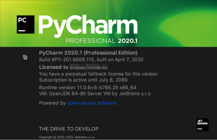
图1：本教程使用的 PyCharm 的 Professional 版
图1：本教程使用的 PyCharm 的 Professional 版
2. 配置虚拟开发环境
如果你不了解什么是 Python 的虚拟环境，请转到：1) 使用本地虚拟Python环境
在 PyCharm 中，我们首先需要创建一个项目。在安装和打开 PyCharm 后，我们会看到欢迎页面，在 File 菜单栏中点击 New Project，弹出 New Project 窗口，如图2所示。
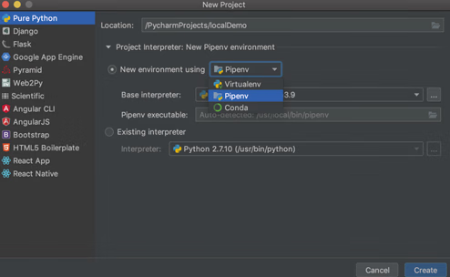
图2：New Project 窗口
图2：New Project 窗口
在该窗口中，我们先指定项目位置和项目名称，再打开 Project Interpreter 列表，选择创建新的项目对应的解释器或者使用已有的解释器。
我们选择 New environment using，打开其右方的下拉列表，选择 Virtualenv、Pipenv 或 Conda。这些工具可以为不同项目单独创建 Python 虚拟环境，从而分别保存不同项目所需的依赖项。
本教程中选择的是 Pipenv，选择 Pipenv 后，指定环境位置，从 Python 解释器列表中选择已安装在系统中的 Base interpreter。
我们点击 Create 按钮，即在 PycharmProjects 目录下新建了一个名为 localDemo 的示例。从图3中可以看到 Python 的解释器为 /.local/share/virtualenvs/localDemo-ozjleAxM/bin/python，这是一个虚拟环境下的解释器。
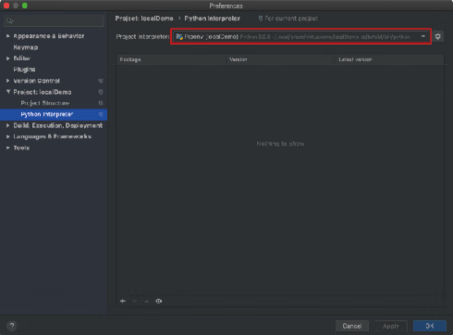
图3：Preferences 窗口
图3：Preferences 窗口
通过点击
+，如图4所示，安装一个 requests 库后，在图5所示的项目目录结构中，可以看到 Pipfile 和 Pipfile.lock 两个文件，pipenv 就是通过这两个文件管理工具包的。
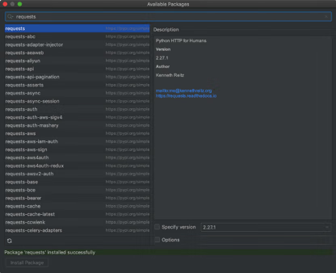
图4：Available Packages 窗口
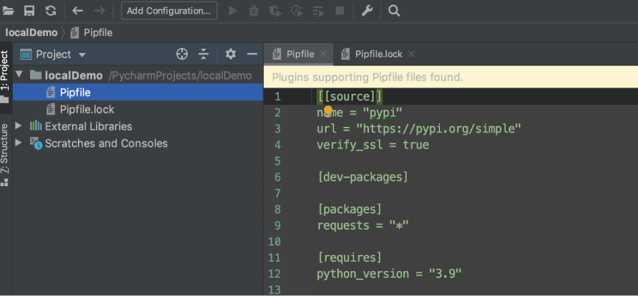
图5：项目目录结构
图4：Available Packages 窗口
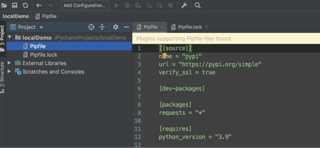
图5：项目目录结构
最后，简单写一个 helloWorld 示例，如图6所示，运行后验证了已采用本地刚构建的虚拟 Python 环境，对后续安装的包都能很方便地进行管理，做到不同项目之间的有效隔离。
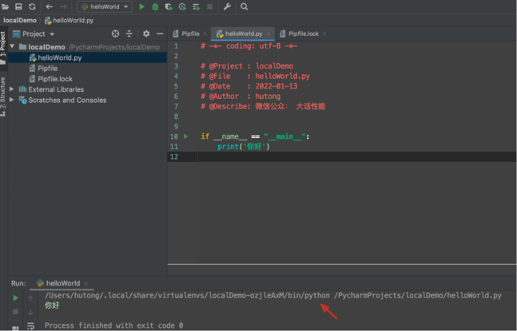
图6：helloWorld 示例
图6：helloWorld 示例
2) 使用远程虚拟 Python 环境
在 PyCharm 中，使用远程虚拟 Python 环境创建一个项目与使用本地虚拟 Python 环境创建一个项目类似，如图7所示。不同的是，在 Project Interpreter 列表中，我们选择 Existing interpreter。在 Existing interpreter 中添加 Interpreter。如图8所示，我们选择 SSH Interpreter 进行远程服务器的 SSH 配置，并在 SSH Configurations 中配置 SSH 的信息。
点击图8的箭头，会弹出配置界面。填好信息，点击 Test Connection 进行测试，显示配置成功，如图9所示。
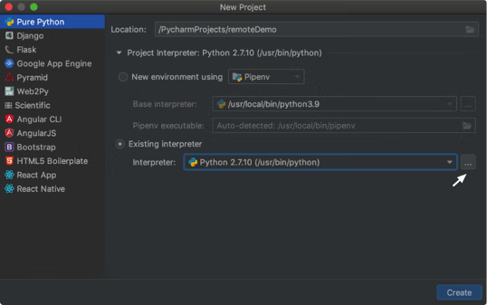
图7：New Project窗口
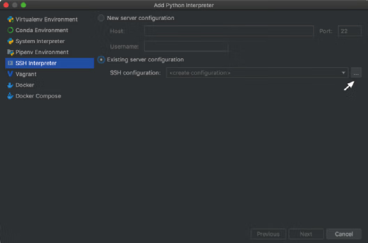
图8：Add Python Interpreter窗口
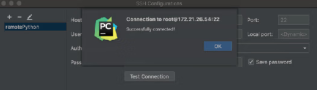
图9：SSH 配置成功的窗口
图7：New Project窗口
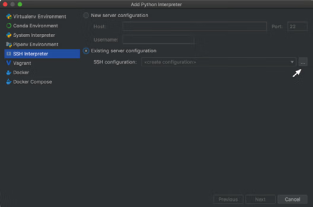
图8：Add Python Interpreter窗口
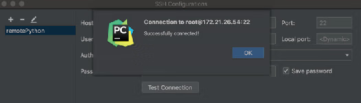
图9：SSH 配置成功的窗口
最后，我们在 Add Python Interpreter 窗口选择刚刚添加成功的远程服务器，如图 10 所示。
点击 Next，进入图 11 所示的窗口，选择远程虚拟的 Python 解释器。
在选择 Python 解释器之前，我们需要在远程服务器上创建虚拟环境。
首先，在远程服务器上，安装好对应的 pipenv 工具，新建 remoteDemo 目录。然后，进入该目录，执行以下命令：
pipenv install --python /usr/local/Python-3.9.8/bin/python3
即可创建一个远程的虚拟环境，如图 12 所示。
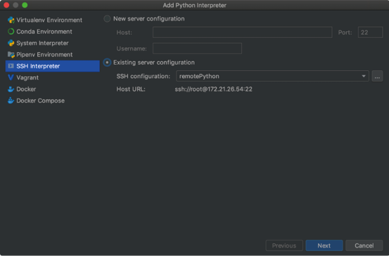
图10：添加远程服务器的窗口
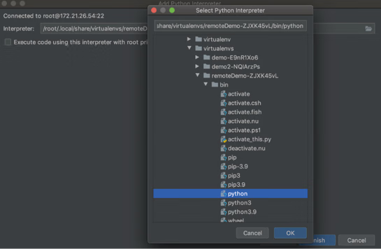
图11：选择远程虚拟的 Python 解释器
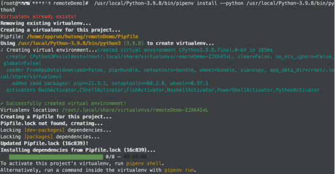
图12：在远程服务器上创建虚拟环境
图10：添加远程服务器的窗口
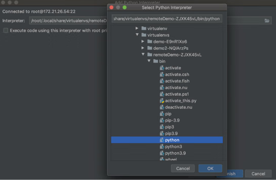
图11：选择远程虚拟的 Python 解释器
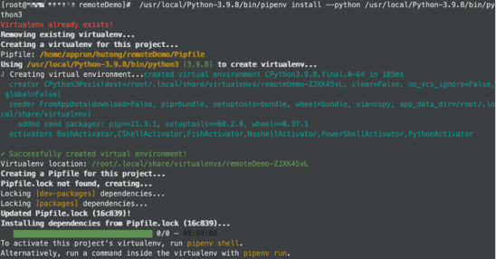
图12：在远程服务器上创建虚拟环境
所以在图11中，选择 /root/.local/share/virtualenvs/remoteDemo-ZJXK45vL/bin/python 为远程虚拟环境的 Python 解释器，设置成功后的界面如图 13 所示。
在 Remote project location 中设置远程项目目录，我们选择之前在远程服务器上创建的 remoteDemo，如图 14 所示。
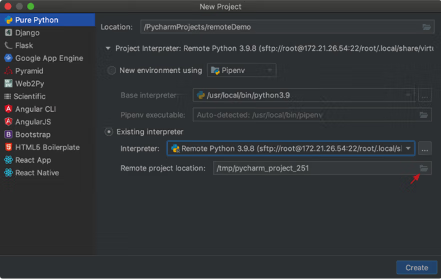
图13：设置 Python 解释器成功
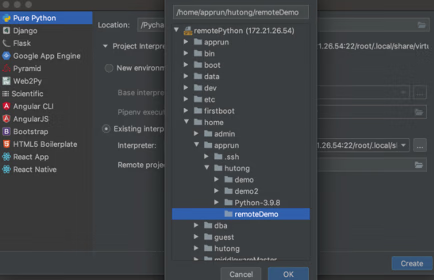
图14：设置远程项目目录
图13：设置 Python 解释器成功
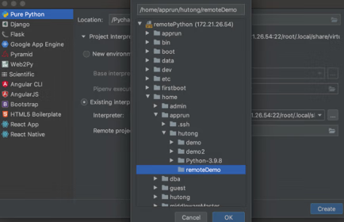
图14：设置远程项目目录
另外，我们需要在 Deployment 界面配置 SFTP 的信息，如图 15 所示。
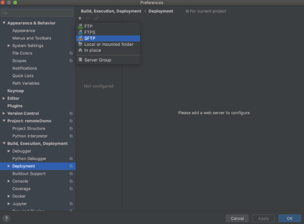
图15：Deployment 界面
图15：Deployment 界面
除了配置 SSH 连接信息，我们还要添加本地项目代码的地址和远程部署的地址，方便后续的代码上传和下载，如图 16 所示。
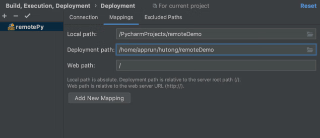
图16：Deployment 的 Mappings 界面
图16：Deployment 的 Mappings 界面
配置成功后，用鼠标右键点击项目名 remoteDemo，在弹出的菜单中选择 Deployment，可以看到 Upload to… 和 Download from… 两个选项，它们分别用于代码的上传和下载，如图 17 所示。
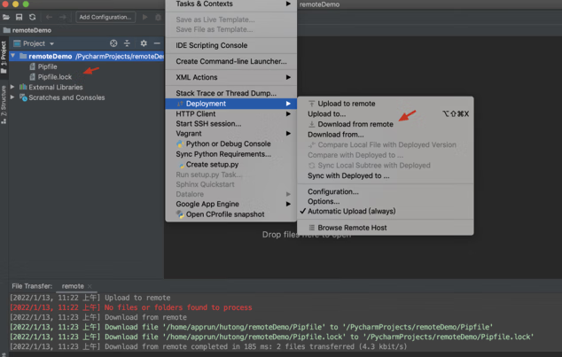
图17：配置成功
图17：配置成功
最后，我们写一个简单的 helloWorld 示例，上传到远程服务器，并在 PyCharm 中点击运行。我们可以发现解释器是远程虚拟 Python 环境，运行的 helloWorld 示例是远程目录下的脚本，如图 18 所示。
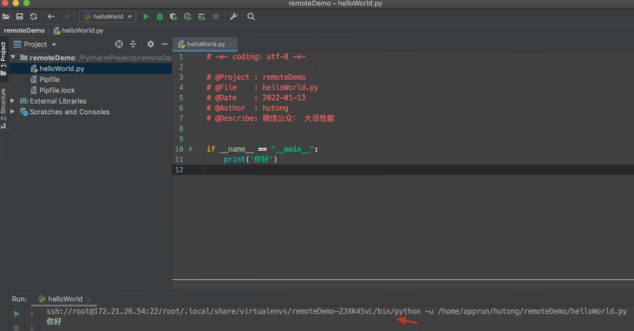
图18：远程虚拟 Python 环境测试成功
图18：远程虚拟 Python 环境测试成功
3. 配置远程开发环境
PyCharm 是一个非常强大的 Python 开发工具，现在很多项目最终的线上运行环境都是 Linux，而开发环境可能还是本地的 Windows，或作为团队合作开发项目，需要远程连接 Linux 服务器进行编程。针对这些场景，PyCharm 提供了非常便捷的远程开发方式。PyCharm 具有远程编程调试功能，下面我们讲解在本地上配置、使用远程开发和调试的步骤。
1) 配置远程 Linux 服务器信息
如图 19 所示，在 Preferences 窗口左侧菜单栏找到 Deployment 选项，点击+来创建 SFTP 连接配置，填写 Connection 选项卡内容，并在 Mappings 选项卡中配置路径映射信息，如图 20 所示。
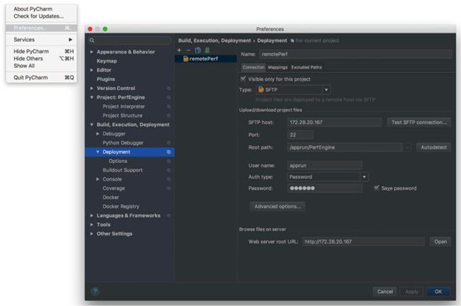
图19：Deployment 界面
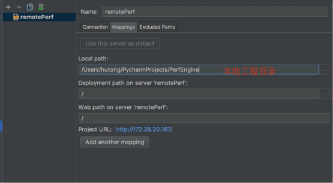
图20：Deployment 的 Mappings 界面
图19：Deployment 界面
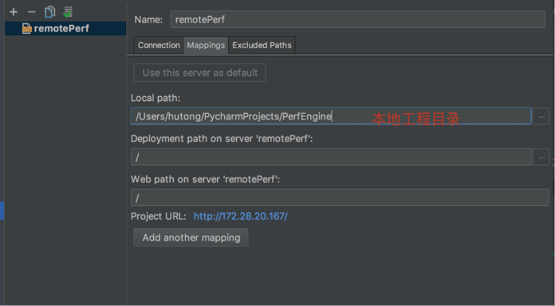
图20：Deployment 的 Mappings 界面
在图 20 中，我们将 Local path 配置为本地的代码路径就可以，这是将本地这个目录同步到服务器上。
Deployment path on server 用于配置 Linux 上项目的路径，此处默认为根目录我们填写相对于 root path 的目录即可。
如果我们有一些文件或文件夹不想同步，那么在 Excluded Paths 选项卡里面添加即可，并且可同时指定本地和远程。
另外，在 Deployment 下的 Options 可以设置自动同步更新上传到服务器，只要在 Upload changed files automatically to the default server 右侧选择 Always 即可，这样我们就不用每次手动更新到服务器，如图 21 所示。
这个功能开启之后，我们在本地新建的文件都会自动同步到远程 Linux 服务器上。
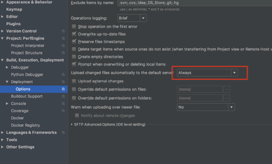
图21：Deployment 中设置自动同步的窗口
图21：Deployment 中设置自动同步的窗口
2) 配置远程 Python 编译器
现在代码工程已部署到远程服务器，运行代码需要采用远程的 Python 编译器。如图 22 所示，点击 Add Remote，弹出窗口，配置如图 23 所示。
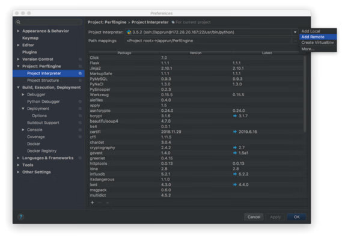
图22：配置远程 Python 编译器
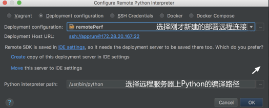
图23：远程 Python 编译器配置窗口
图22：配置远程 Python 编译器
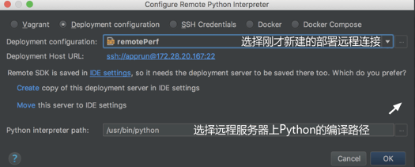
图23：远程 Python 编译器配置窗口
这样就配置完成了，我们在本地 PyCharm 就可以使用远程的 Python 编译器，如图 24 所示，运行远程服务器上的代码可以像运行本地代码一样方便，图 24 中线条标注的是远程 Python 解释器，说明远程开发环境配置成功了。
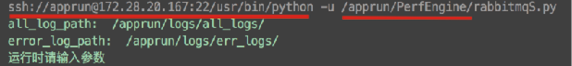
图24：远程 Python 编译器配置成功
图24：远程 Python 编译器配置成功
温馨提示
在上传代码到远程服务器的时候，遇到过偶现问题，错误信息如下：
2021/8/6 下午4:34] Failed to transfer file '/Users/hutong/PycharmProjects/PerfEngine/jmeterUtils/jmeterEngine.py': could not close the output stream for file "sftp://172.28.20.167/jmeterUtils/jmeterEngine.py".
[2021/8/6 下午4:34] Automatic upload completed in less than a minute: 1 item failed
4. PyCharm常用功能
想灵活应用一门新的语言的时候，最重要的是熟悉其常用的开发工具的配置和使用，如此才能事半功倍，提高工作效率。PyCharm 提供的配置很多，本教程将讲解几个在实际工作中重要和实用的配置。1) 编码设置
Python 中如果涉及中文，那么就绕不过编码问题。为此 PyCharm 提供了方便直接的解决方案，在 Global Encoding、Project Encoding 和 Property Files 这3处都默认使用 UTF-8 编码，具体设置在 PyCharm 的 Preferences 窗口的 File Encodings 中，如图25所示。另外，在新建任何 .py 文件的时候，建议在文件头添加图 26 所示的语句，显式地声明编码方式。
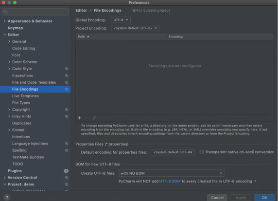
图25：File Encodings 界面
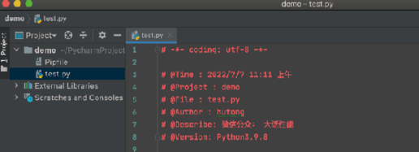
图26：.py 文件编辑窗口
图25：File Encodings 界面
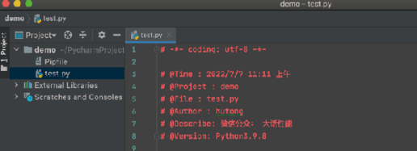
图26：.py 文件编辑窗口
2) 分屏查看代码
如果需要在一个文件中编写两处代码，而这两处代码又相隔比较远，那么我们可以对该文件开启分屏模式。分屏方式分为两种：竖屏和横屏。分屏模式开启方式为在代码文件上用鼠标右键点击，在弹出的菜单中，选择图 27 所示的两个选项。
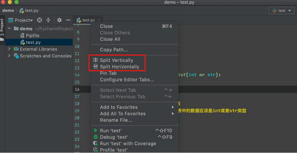
图27：开启分屏模式
图27：开启分屏模式
3) 解释器设置
当有多个版本的 Python 解释器安装在计算机上，或者需要管理虚拟环境时，在 PyCharm 的 Preferences 窗口左侧菜单栏中的 Project:demo 下的 Python Interpreter 中提供了方便的管理切换操作，如图 28 所示。另外，在这个界面，我们可以方便地进行切换 Python 版本、添加和卸载工具等操作。
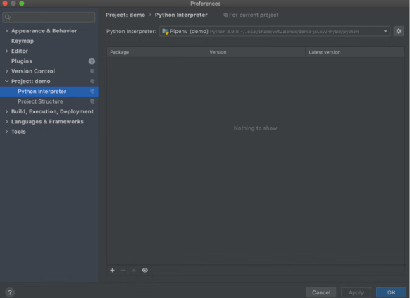
图28：Python Interpreter 界面
图28：Python Interpreter 界面
4) 模板设置
PyCharm 提供的代码模板功能，可以说是相当实用的。我们在新建一个 .py 文件时，可以用此功能按照我们预设的模板生成一段内容，如解释器路径、编码方法、作者详细信息等。文件头模板的设置路径为 Preferences --> Editor --> File and Code Templates --> Python Script，在右侧输入框区域添加模板代码，如图 29 所示。这样在每一次新建 .py 文件时，文件头会自动填充这几行，包括编码方式、创建时间、项目名称、文件名称、作者、版本等信息。
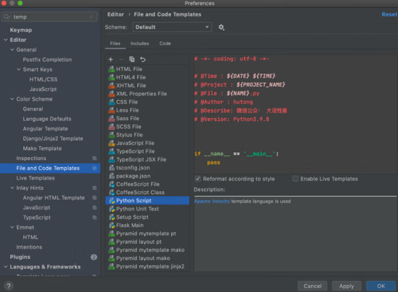
图29：模板设置界面
图29：模板设置界面
我们在新建 .py 文件时，PyCharm 会自动添加文件头注释，而不用我们手动添加这些信息，效果如图 30 所示。其中，模板常用内置变量如表1所示，大家可以根据自己的需求定制文件头。
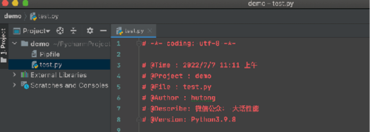
图30：自动添加文件头注释效果
图30：自动添加文件头注释效果
| 格式 | 描述 |
|---|---|
| ${PROJECT_NAME} | 项目名 |
| ${PRODUCT_NAME} | 集成开发环境 |
| ${NAME} | 文件名 |
| ${USER} | 用户名，指登录计算机的用户名 |
| ${DATE} | 当前系统的年、月、日 |
| ${TIME} | 当前系统的时、分、秒 |
| ${YEAR} | 当前年份 |
| ${MONTH} | 当前月份，形式：07 |
| ${MONTH_NAME_SHORT} | 当前月份，形式：7月 |
| ${MONTH_NAME_FULL} | 当前月份，形式：七月 |
| ${DAY} | 当天 |
| ${HOUR} | 当前小时 |
| ${MINUTE} | 当前分钟 |
| ${SECOND} | 当前秒 |
5) 指定运行参数
有时候，在运行/调试脚本时，需要指定一些参数，这在命令行中可以方便地直接指定。而在 PyCharm 中也可以直接设置。PyCharm 的导航栏点击 Run，在弹出的菜单栏中选择 Run/Debug Configurations 进入设置面板，在 Configuration 选项卡中填入参数即可。
如果在命令行中运行脚本的命令是 python main.py init --local，那么直接在图 31中 的 Parameters 输入框中填入 init --local 即可。这样直接点击 Run 运行代码，PyCharm 就会自动把脚本参数带上。
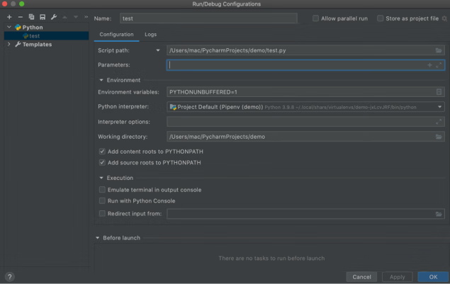
图31：参数设置窗口
图31：参数设置窗口
6) 调试程序
断点调试是在开发过程中常用的功能，通过断点调试，我们能清楚地看到程序运行的过程，有利于跟踪代码问题。另外，如果刚接收别人写的代码，调试功能可以帮忙我们快速熟悉代码，通过断点调试，我们可以很清楚地看到程序是怎么运行的、每一步的参数值等。
断点的作用是当程序采用调试方式运行时，程序运行到断点位置，将会停下，并展示该断点的详细信息。
PyCharm 设置断点的方式很简单，在代码行号后空白处点击一下，出现红色圆点就可以了。
在 PyCharm 中调试程序的大致步骤如下。
① 设置断点
一个断点标记了一行代码，当 PyCharm 运行到该行代码时会将程序暂时挂起。注意，断点会将对应的代码标记为红色，取消断点的操作也很简单，在同样位置再次点击即可。
② 程序调试
通常有两种方法来调试程序：- 第一种是通过鼠标右键点击代码来调试程序；
- 第二种是通过点击一个小虫子的图标来进行调试。
如果 PyCharm 开始运行，在断点处暂停，断点所标记的代码变蓝，则意味着程序进程已经到达断点处，但尚未运行断点所标记的代码，我们可以在调试控制窗口中根据需求选择对应的按钮，进行调试程序的运行。
③ 设置变量查看器
我们需要在调试过程中观察变量的状态，因此需要对变量设置一个查看器。在 Watches 窗口中，点击+，输入期望查看的变量名称。另外，在调试控制窗口中，共有7个按钮，它们的作用分别如下：
| 按钮 | 说明 |
|---|---|
| Show Execution Point | 用于显示当前断点，当鼠标光标在其他行或其他文件时，点击此按钮可以跳转到当前的断点。 |
| Step Over |
在单步运行时，程序运行到函数内遇到子函数时不会进入子函数内单步运行，而是将子函数整体运行完再停止，也就是把子函数整体作为一步。 Step Over 在不存在子函数的情况下和 Step Into 效果是一样的。简单来说就是程序会运行子函数，但不进入。 |
| Step Into | 在单步运行时，程序运行遇到子函数就进入子函数内并且继续单步运行，即会进入函数体内部、系统源码和第三方工具源码。 |
| Step Into My Code | 在单步运行时，程序运行遇到子函数就进入并且继续单步运行，主要关注自己写的代码，不会进入系统源码和第三方工具源码。 |
| Step Out | 假如程序运行进入一个函数体，我们看了两行代码，不想看了，想要跳出当前函数体，返回调用此函数的地方，就可以使用此功能。 |
| Run To Cursor | 程序运行到光标处，即不需要每次都设置一个断点。 |
| Evaluate Expression | 用于计算表达式，在调试模式下可以动态执行代码，甚至动态修改代码运行时变量的值，查看变量的值。 |
7) 安装依赖工具包
除了可以通过 pip 命令安装第三方工具包，在 PyCharm 中也可以很方便地安装第三方工具包。我们进入 Preferences --> Project:demo --> Python Interpreter，点击+，如图 32 所示，即可安装第三方工具包。
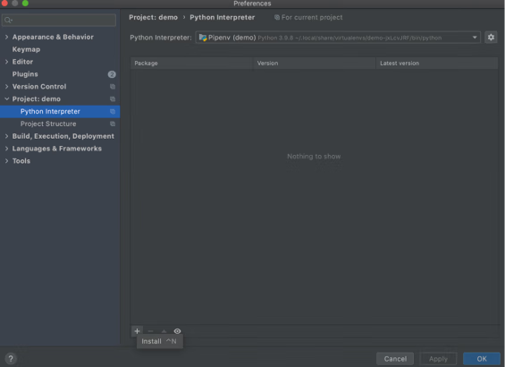
图32：安装第三方工具包的界面
图32：安装第三方工具包的界面
注意事项
若 PyCharm 安装第三方工具包的过程中出现报错，报错内容为：Non-zero exit code(2)，no such option: --bulid-dir
原因：pip 目前最新的安装包都是 21.3 版本，PyCharm 依赖 --build-dir 安装第三方工具包，但是该标志在 pip 的 20.2 版本后已被删除，所以如果使用的 pip 是 20.2 版本之后的新版本，就会出现上述的错误。解决方法：执行命令 python -m pip install pip==20.2.4，切换 pip 的版本到 20.2 版本即可。
8) 配置 PyPI 国内源
在用 pip 去安装一些第三方工具包的时候，PyCharm 默认下载国外的资源，有时候会因为网络等问题导致安装失败。我们可以配置成国内源（镜像）以提速。最常见的是使用清华大学的开源镜像，在 PyCharm 设置的方法：点击 File --> Settings --> Project，在 Python Interpreter 界面点击
+ --> Manage Repositories -->+，输入清华大学开源软件镜像站地址即可。当然，大家也可以设置为阿里云、豆瓣等国内其他的镜像地址。
临时使用国内 PyPI 镜像安装命令如下。
9) tab 和空格的自动转换
Python 语言最具特色的语法就是使用缩进来区分代码块。缩进空格数是可变的，但是同一个代码块的语句必须使用相同的缩进空格数，缩进不一致会导致运行错误。在团队协作中，我们难免会碰到别人编辑的文件，有的人喜欢用 tab 做缩进，有的人喜欢用4个空格做缩进。但是在同一个 Python 文件里，tab 缩进和4个空格缩进是不能共存的。这就需要我们按照该文件原来的缩进风格来编码。
在 PyCharm 中，我们可以设置自动检测原文件的缩进方式来决定当我们使用 tab 键缩进的时候，输出是 tab 还是4个空格，在图 33 所示位置勾选即可开启自动检测。
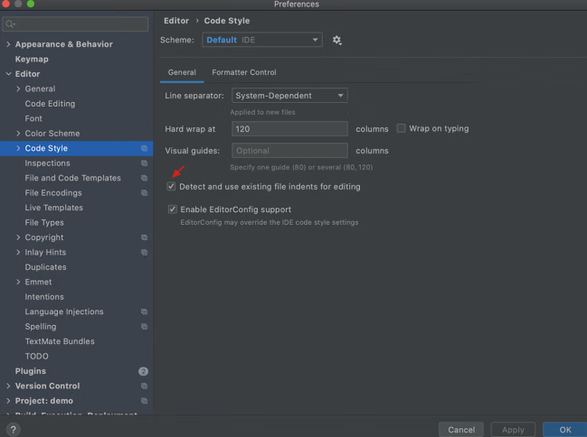
图33：tab 和空格自动检测设置的窗口
图33：tab 和空格自动检测设置的窗口
注意事项
在项目中 tab 和空格混用可能报类似如下的错误：IndentationError: unindent does not match any outer indentation level
解决方法：统一成 tab 或者空格。在 PyCharm 中的解决方法是选中所有文本，然后点击菜单栏中的 Edit，通过 Convert Indents，将所有文本的缩进统一成 tab 或者空格。10) 函数注释和参数注释
在编写函数的时候，专业的做法是声明各个参数的含义和返回值，方便自己或他人阅读和理解。PyCharm 提供了便捷地添加函数参数注释的功能。只需要点击函数名，如图 34 所示，左上角亮起小灯泡图标，点击小灯泡图标，选中 Insert documentation string stub 即可。
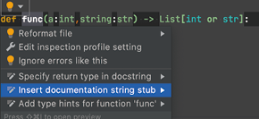
图34：设置注释
图34：设置注释
此时，PyCharm 就会自动添加函数注释和参数注释的框架，我们可以在
"""后添加函数注释和参数注释。添加注释成功后，若后续引用函数，则选中函数，按下 Ctrl+Q 快捷键，即可显示函数和参数的注释，如图 35 所示。
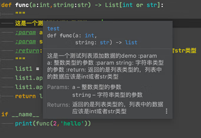
图35：显示注释
图35：显示注释
11) __name__== '__main__' 的作用
很多新手开始学习 Python 的时候可能都比较疑惑 Python 中__name__ == '__main__'的作用。下面我们举例说明，先写一个模块 module，在其中定义一个函数 main()。
def main():
print "we are in %s"%__name__
if __name__ == '__main__':
main()
执行 module.py 文件，发现结果打印出“we are in __main__”，说明 if 语句中的内容被执行了，调用了 main() 函数。但是如果我们在另一个模块 moduleA.py 中导入该模块，并调用一次 main() 函数，观察结果发现其运行结果为 we are in module。
from module import main main()没有显示“we are in __main__”，也就是说模块 __name__ = '__main__' 下面的函数没有执行。所以，如果我们直接执行某个 .py 文件，那么该文件中 __name__ == '__main__' 是 True，但是如果我们在另一个 .py 文件通过 import 导入该文件，这时 __name__ 的值就是我们这个 .py 文件的名字而不是 __main__。
这样既可以让模块文件执行，也可以在其被其他模块文件调用时不重复执行函数。
这个功能还有一个用处，即在调试代码的时候，在 if __name__ == '__main__' 中加入我们的调试代码，当外部模块调用的时候不运行我们的调试代码，但是如果我们想排查问题，则可以直接执行该模块文件，调试代码能够正常运行。
12) 设置去除显示的波浪线
在 PyCharm 中代码下会显示波浪线，但是该代码语句没有错误，这看起来很不清爽，其实我们可以将其设置为不再提醒。具体方法为在 Preferences 界面选择 Editor --> Color Scheme --> General 选项，然后选择打开的界面中的 Errors and Warnings 选项，选择选项下的 Weak Warning，然后将界面右侧的 Effects 取消勾选即可，如图 36 所示。
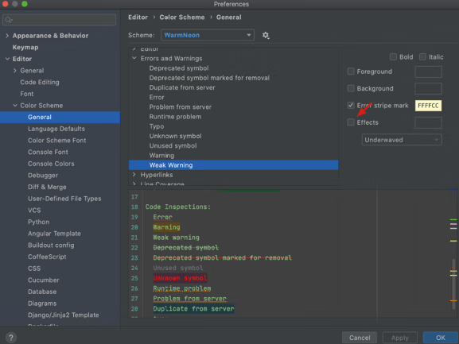
图36：波浪线去除设置的窗口
图36：波浪线去除设置的窗口
13) 可视化操作数据库
PyCharm 可以连接绝大多数市面上主流的数据库，如 MySQL、MongoDB 等，对大多数人来说，有了 PyCharm 后，就再也不用去额外下载 Navicat 等其他第三方操作数据库的工具了。下面以 MySQL 为例，讲解如何创建并保存一个数据库连接。
首先在 PyCharm 的右侧导航栏中点击 Database，然后点击 Database 窗口左上角的
+ --> Data Source --> MySQL，如图 37 和图 38 所示。
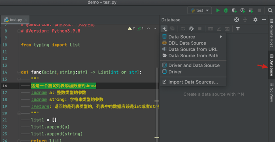
图37：设置数据库
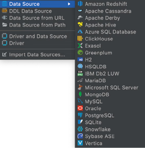
图38：选择数据库
图37：设置数据库
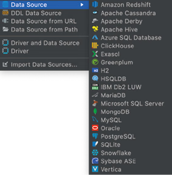
图38：选择数据库
我们在弹出的配置界面，输入 ip、port、password 等信息，点击 Test Connection 测试一下是否能连接，如果连接成功，则点击 OK 进行保存，以便下次复用。
连接成功后，PyCharm 会自动弹出一个 MySQL Console 的查询界面，我们可以在这个界面中执行 SQL 命令。
5. 配置 Git 代码管理仓库
版本控制系统是现代软件开发中非常重要的工具之一，因此 IDE 必须支持版本控制。PyCharm 在这方面做得很好，它集成了大量流行的版本控制系统，如 Git、Mercurial、Perforce 和 Subversion。使用 Git 来进行代码管理，能够实现多人对同一项目进行代码提交、更新、删除等管理操作。
简单来说就是在 GitHub 上创建远程 master 分支，然后每个人将 master 分支拉取到本地并创建自己的独立分支，在代码更新之后提交到独立分支，由管理员统一合并至 master 分支，以防止覆盖等误操作。
接下来，我们将演示如何在 PyCharm 中使用 Git。
首先我们要有一个 Git 仓库，并在上面创建项目。然后，我们就可以在 PyCharm 上通过 Git 迁出（checkout）一个仓库，如图 39 所示。
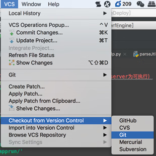
图39：迁出仓库
图39：迁出仓库
接下来，在弹出的窗口中，填写 Git 的仓库地址信息和本地的工程地址信息，如图 40 所示。
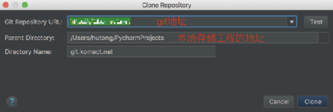
图40：Git 配置对话框
图40：Git 配置对话框
1) 将本地代码的更新同步至 GitHub
迁出之后，PyCharm 可能识别不到，这时需要在菜单栏 VCS 下点击 Enable Version Integration。对于本地新增或者更改的文件，我们首先用鼠标右键点击文件夹，Git --> Commit Directory，如图 41 所示，在 Commit Changes 窗口中，可以选中的文件表示此次允许提交的文件，可以看出窗口中出现的文件，都是新增文件或本次有更改的文件。
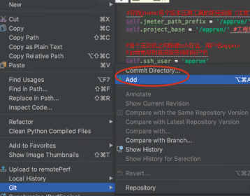
图41：提交本地代码
图41：提交本地代码
在经过提交（commit）操作之后，原来的红色/蓝色文件会变成正常的颜色，表示文件已经提交到本地分支。最后一步是要将本地分支推送（push）至远端分支，通过在菜单栏选择 VCS --> Git --> Push 进行推送，推送成功后，在 PyCharm 界面的右下角会出现“all file are up-to-date”。
温馨提示
在 PyCharm 中，文件有4种状态，PyCharm 已经很贴心地用不同颜色表示出来了。- 白色表示已加入版本控制，已提交，无改动。
- 红色表示本地存在（一般是新增），但是没有同步至远端仓库的文件。
- 蓝色表示已提交的文件在本地有更改，但未同步至远端仓库。
- 绿色表示已加入版本控制，暂时未提交的文件。
2) 将远程 master 分支的更新同步至本地
Git 中的分支为本地分支和远程分支：- 本地分支存储在当前计算机上，用于自己开发。
- 远程分支存储在Git的服务器上，用于团队开发和项目管理。
我们一般在本地分支上开发，然后在远程分支上合并代码。
在别人更新代码并提交至远程分支、合并 master 分支之后，如果我们想看到别人提交的代码，需要把远程 master 分支的代码更新同步到本地。
找到 PyCharm 右下角的 Git Branches 并点击 origin/master，然后选择远程 master --> Merge into Current 合并（merge）远程分支，如图 42 所示。
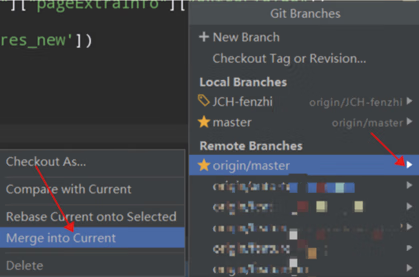
图42：合并远程分支
图42：合并远程分支
如果本地分支与将要拉取的 master 分支有代码冲突，例如多人同时修改了一个文件，此时 PyCharm 提供了3个解决冲突的选项。
- Accept Yours：使用自己的文件代替远程的文件。
- Accept Theirs：使用远程的文件代替本地的文件。
- Merge：自己手动选择，这里推荐使用该选项。
最后，代码合并到本地之后，再点击 Update Project 用拉取的最新代码更新本地代码即可。
6. 小结
通过学习本教程的内容，希望大家能掌握如何用 PyCharm 构建不同需求的开发环境，如虚拟环境的、远程环境的，能学会运用一些常用的 PyCharm 使用技巧，提升代码开发效率。关注公众号「站长严长生」，在手机上阅读所有教程，随时随地都能学习。内含一款搜索神器，免费下载全网书籍和视频。

微信扫码关注公众号